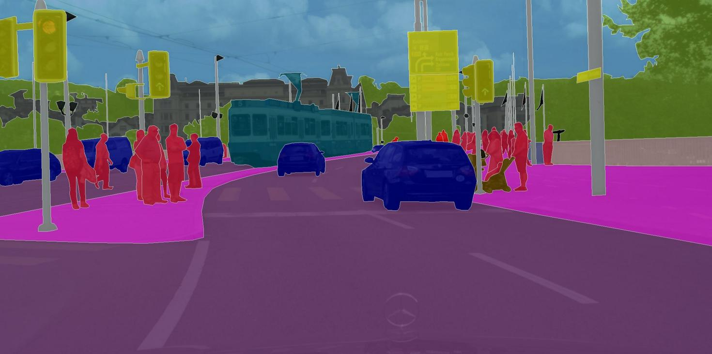
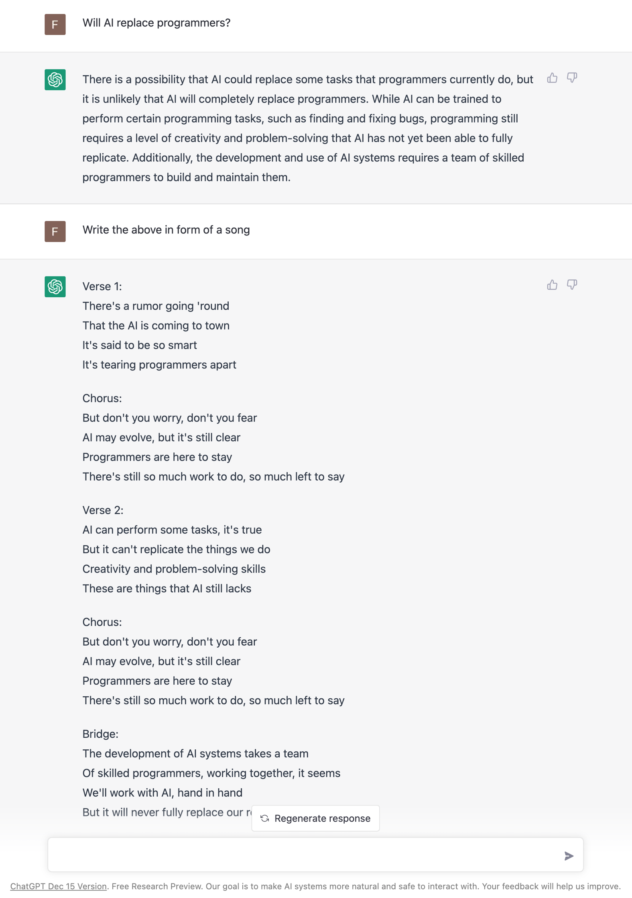

Einleitung
Dieses Kapitel illustriert mit verschiedenen motivierenden Beispiele den Aufstieg von Machine Learning (ML).
ML ist überall!
Maschinelles Lernen wird bereits überall um uns herum verwendet, um unser Leben bequemer zu machen:
Gesichtserkennung
Eine der ersten Erfolgsgeschichten aus dem Bereich maschinelles Lernen und Computer Vision ist die Gesichtserkennungstechnologie, welche heutzutage in jeder Digitalkamera und jedem Smartphone verbaut ist.
Während die in einer Kameraanwendung implementierten Algorithmen ziemlich einfach sind und nur Gesichter im Allgemeinen erkennen, um sicherzustellen, dass man bei der Aufnahme gut zu sehen ist, werden in immer mehr Ländern auch ausgefeiltere Algorithmen von Regierungen und Strafverfolgungsbehörden verwendet, um ein erkanntes Gesicht einer bekannten Person in ihren biometrischen Datenbanken zuzuordnen, um beispielsweise um Kriminelle zu identifizieren. Also …bitte lächeln!?

Objekterkennung (z.B. für autonomes Fahren)
Ein weiteres Beispiel aus dem Bereich Computer Vision ist die Objekterkennung oder die Bildsegmentierung im Allgemeinen. Dies wird beispielsweise in selbstfahrenden Autos verwendet, um sicherzustellen, dass Straßenschilder und Fußgänger erkannt werden.

Analyse von medizinischen Bildern
Ein abschließendes Beispiel für die Auswertung von Bilddaten stammt aus dem Anwendungsbereich Medizin: Unten sind zwei Aufnahmen von der Netzhaut abgebildet, anhand derer eine häufige Diabetes-Komplikation diagnostiziert werden kann. Unbehandelt kann diese zu Blindheit führen.
Der Diagnosealgorithmus zur Erkennung von Krankheitsmarkern in solchen Bildern wurde von Forschern bei Google entwickelt und hat die gleiche Genauigkeit wie menschliche Experten auf diesem Gebiet. Google hatte sogar ein Team von Top-Spezialisten zusammengestellt, um die schwierigsten Fälle noch einmal zu besprechen und einheitliche Labels für alle Bilder zu generieren, wodurch sie ihr Modell noch weiter verbessern konnten.
Da die Geräte zur Aufnahme dieser Bilder relativ günstig sind, können mit diesem ML-Modell Experten-Diagnoseentscheidungen auch denjenigen zugänglich gemacht werden, die sonst eventuell nicht die Möglichkeit haben, einen Top-Spezialisten zu konsultieren.

Sprachassistenten (oder genau genommen: Spracherkennung…)
Genug zu Computer Vision; nun ein Beispiel aus dem Bereich Natural Language Processing (NLP; “Verarbeitung natürlicher Sprache”): Sprachassistenten, wie Siri oder Alexa, warten bei vielen Menschen zu Hause auf Befehle. Während einige der Antworten, die sie geben, noch von Menschen geschrieben wurden (wie im Screenshot unten), besteht die eigentliche Herausforderung darin, zu verstehen, was die Person tatsächlich sagt. Die Spracherkennung, also das automatische Transkribieren gesprochener Sprache in Text, ist ein ziemlich schwieriges Problem, da Menschen z.B. in verschiedenen Dialekten sprechen und zusätzliche Hintergrundgeräusche auftreten können.

Maschinelle Übersetzung
Nochmal aus dem Bereich NLP: Maschinelle Übersetzung, also das automatische Übersetzen von Texten in eine andere Sprache.
Falls du Google Translate (als Beispiel im Screenshot unten gezeigt) kurz nach seiner Erscheinung 2006 verwendet hast, warst du wahrscheinlich meistens ziemlich enttäuscht von den Ergebnissen. Die Übersetzungen klangen so als hätte jemand die Wörter nur nacheinander in einem Wörterbuch nachgeschlagen (= statistische maschinelle Übersetzung). Dies änderte sich 10 Jahre später im Jahr 2016 als Google anfing, die Übersetzungen mit einem neuronalen Netzmodell zu generieren: Jetzt sind die übersetzten Texte tatsächlich lesbar und erfordern in der Regel nur noch geringfügige manuelle Korrekturen, wenn überhaupt.

Empfehlungssysteme (Recommender Systems)
Ein weiteres ML-Anwendungsgebiet sind Empfehlungssysteme, z.B. auf E-Commerce-Plattformen wie Amazon (siehe Screenshot unten), die dem Nutzer (idealerweise) hilfreiche Suchergebnisse und Vorschläge liefern, wodurch die jeweiligen Unternehmen wiederum Umsätze generieren. Auch Social Media Plattformen, Netflix, YouTube & Co fesseln ihre Nutzer damit länger an den Bildschirm.
Manchmal helfen die generierten Vorschläge dem Nutzer genau das zu finden, wonach er gesucht hat. Aber insbesondere Plattformen mit nicht-kuratierten Inhalten wie YouTube wurden in der Vergangenheit kritisiert, da sie durch personalisierte Empfehlungen unter anderem die Verbreitung von Verschwörungstheorien förderten. Da diese Art von Inhalten ein besonderes Suchtpotential haben, wurden sie häufiger empfohlen und trieben die Nutzer dadurch weiter in den postfaktischen Sumpf, anstatt auch Perspektiven außerhalb der eigenen Informationsblase anzubieten.
Auf der anderen Seite hat die Erforschung von Empfehlungssystemen aber auch Entwicklungen in anderen Wissenschaftsbereichen beflügelt. Zum Beispiel kann die Suche nach Heilmitteln für Krankheiten beschleunigt werden, indem Wirkstoffmoleküle empfohlen werden, die zu den Proteinen passen, die eine Schlüsselrolle in der Krankheit spielen.


Besser als der Mensch: AlphaGo
Im Jahr 2016 präsentierte DeepMind, ein später von Google übernommenes Startup, AlphaGo, das erste Computerprogramm, das einen menschlichen Go-Meister besiegte.
Dies war ein großer Meilenstein für die KI-Forschungsgemeinschaft. Go ist mit einem Spielfeld von 19 x 19 Feldern viel komplexer als Schach (8 x 8 Felder und restriktivere Bewegungsmuster) und selbst die optimistischsten KI-Forscher hatten nicht erwartet, dass ein Computer vor 2020 gegen einen Go-Meister gewinnen könnte.
Die in AlphaGo verwendeten Algorithmen stammen aus dem Teilgebiet des Reinforcement Learning, auf das wir später noch genauer eingehen.

Proteinfaltung – ein 50 Jahre altes Problem ist gelöst
Im Jahr 2020 konnte DeepMind eine weitere Erfolgsgeschichte erzählen: Ihr AlphaFold-Modell kann die 3D-Struktur von Proteinen aus ihrer ursprünglichen Aminosäuresequenz bestimmen – und zwar genauso akkurat wie traditionelle Simulationsmodelle.
Proteine spielen oft eine Schlüsselrolle in Krankheiten. Kennt man die 3D-Struktur eines Proteins, kann man bestimmen, welche Wirkstoffmoleküle an dieses Protein binden können. Dadurch können Zielstrukturen identifiziert werden, die weiter untersucht werden sollten, um ein Heilmittel für die entsprechende Krankheit zu finden.
Zwar gab es die exakten Simulationsmodelle zur Berechnung der 3D-Struktur eines Proteins schon länger, diese waren jedoch sehr langsam und es dauerte oft mehrere Tage, um die Faltung eines einzelnen Proteins zu berechnen. Mit dem neuen neuronalen Netzmodell kann dieselbe Berechnung jetzt in Minuten oder sogar Sekunden durchgeführt werden, wodurch die Medikamentenentwicklung enorm beschleunigt wurde.

Neuronale Netze werden kreativ
Viele unterhaltsame Anwendungen verwenden neuronale Netze, um neue Inhalte zu generieren, d.h. kreative Tätigkeiten auszuführen, die bisher ausschließlich den Menschen vorbehalten schienen.
Zum Beispiel hat eine KI ein etwas verwirrendes, aber urkomisches Skript für einen Film geschrieben, der dann sogar produziert wurde.
Neuronale Netze auch verwendet, um Musik zu visualisieren. Dabei werden passende Bilder kombiniert und fließend transformiert wie in diesem Video:
Und du hast wahrscheinlich auch schon einige Beispiele für “Neural Style Transfer” gesehen, eine Technik mit der man z.B. ein Social-Media-Profilbild wie ein Van-Gogh-Gemälde aussehen lassen kann:

Auch Stock-Fotos sind nun im Grunde obsolet, da man mit Hilfe neuronaler Netze Bilder aus einer Textbeschreibung generieren kann:

Und Chatbots können Gespräche führen und Informationen in verschiedenen Formen wiedergeben:

ML Geschichte: Warum jetzt?
Warum gibt es einen solchen Anstieg von ML Anwendungen? Allgegenwärtig ist ML nicht nur in unserem Alltag, auch die Zahl der jährlich veröffentlichten Forschungsarbeiten zu dem Thema ist exponentiell gestiegen:

Interessanterweise liegt das aber nicht etwa an einer Fülle bahnbrechender theoretischer Errungenschaften in den letzten Jahren (in der Grafik als violette Rauten gekennzeichnet). Im Gegenteil: Viele der heute verwendeten Algorithmen wurden bereits Ende der 50er / Anfang der 60er Jahre entwickelt. So ist beispielsweise das Perzeptron der Vorläufer von neuronalen Netzen, die hinter allen im letzten Abschnitt gezeigten Beispielen stecken. Einige der wichtigsten neuronalen Netzarchitekturen, Recurrent Neural Networks (RNN, “rekurrente neuronale Netze”) und Convolutional Neural Networks (CNN, “faltende neuronale Netze”), welche die Grundlage für moderne Sprach- bzw. Bildverarbeitung bilden, wurden in den frühen 80er und 90er Jahren entwickelt. Aber zu dieser Zeit hatten wir noch nicht die Rechenressourcen, um diese Modelle für mehr als kleine Experimente zu verwenden.
Aufgrund dessen korreliert der Anstieg der ML-Publikationen stärker mit der Anzahl der Transistoren auf CPUs (also den regulären Prozessoren in normalen Computern) und GPUs (Grafikkarten, die die Arten von Berechnungen parallelisieren, die zum effizienten Trainieren von neuronalen Netzwerkmodellen erforderlich sind):

Darüber hinaus hat die Veröffentlichung vieler Open-Source-Bibliotheken wie scikit-learn (für traditionelle ML-Modelle) und theano, tensorflow und (py)torch (für die Implementierung neuronaler Netze) die Verwendung von ML-Algorithmen in anderen Fachbereichen deutlich erleichtert.
Einerseits demokratisieren solche Bibliotheken die Verwendung von ML, andererseits resultiert eine Nutzung ohne Wissen über die theoretischen Grundlagen auch in Fehlanwendungen. Die Modelle zeigen dann oft nicht die erwartete Performance, was zu (deplatzierter) Enttäuschung führt. Im ungünstigsten Fall kann es passieren, dass die Modelle bestimmte Teile der Bevölkerung diskriminieren, z.B. Kreditbewertungsalgorithmen, die von Banken verwendet werden und die aufgrund von Verzerrungen in den historischen Daten Frauen systematisch Kredite zu höheren Zinssätzen anbieten als Männern. Wir werden solche Probleme im Kapitel zur Vermeidung häufiger Fehler besprechen.
Ein weiterer Faktor, der zur Verbreitung von ML beiträgt, ist die Verfügbarkeit von (digitalen) Daten. Unternehmen wie Google, Amazon und Meta hatten hier einen Vorsprung, da ihr Geschäftsmodell von Anfang an auf Daten aufgebaute. Andere Unternehmen holen inzwischen langsam auf. Während traditionelle ML-Modelle nur minimal von diesen verfügbaren Daten profitieren, können große neuronale Netzmodelle mit vielen Freiheitsgraden jetzt ihr volles Potenzial entfalten, indem sie aus all den Texten und Bildern lernen, die täglich im Internet veröffentlicht werden:

Aber wir sind nach wie vor noch weit von Artificial General Intelligence (AGI, “künstliche allgemeine Intelligenz” oder “starke KI”) entfernt!

Eine AGI ist ein hypothetisches Computersystem mit menschenähnlichen kognitiven Fähigkeiten, das in der Lage wäre, ein breites Spektrum von Aufgaben in verschiedenen Bereichen zu verstehen, zu lernen und auszuführen. Speziell würde eine AGI nicht nur bestimmte Aufgaben ausführen, sondern auch ihre Umgebung verstehen und daraus lernen, autonom Entscheidungen treffen und ihr Wissen auf vollkommen neue Situationen verallgemeinern.
In der Praxis wird stattdessen Artificial Narrow Intelligence (ANI, auch “schwache KI”) verwendet: Modelle, die explizit programmiert wurden, um eine bestimmte Aufgabe zu lösen, z.B. Texte von einer Sprache in eine andere übersetzen. Diese Modelle können nicht (eigenständig) verallgemeinern und neue Aufgaben lernen, sprich das maschinelle Übersetzungsmodell wird nicht morgen auf die Idee kommen, dass es nun auch Gesichter in Bildern erkennen will. Natürlich kann man mehrere einzelne ANIs in einem großen Programm kombinieren, um so mehrere verschiedene Aufgaben zu lösen, aber auch diese Sammlung von ANIs ist nicht in der Lage, selbstständig neue Fähigkeiten darüber hinaus zu erlernen.
Viele KI-Forscher sind derzeit überzeugt, dass wir zumindest mit den aktuell verwendeten Methoden (z.B. den Large Language Models (LLMs) wie ChatGPT von OpenAI) wahrscheinlich nie eine echte menschenähnliche AGI erschaffen werden. Speziell mangelt es diesen KI-Systemen noch immer an einem allgemeinen Verständnis von Kausalität und physikalischen Gesetzen wie der Objektpermanenz – etwas, das sogar viele Haustiere verstehen.
Wenn du mehr über die Mängel aktueller KI-Systeme erfahren möchtest, sind die Blogartikel von Gary Marcus sehr zu empfehlen!